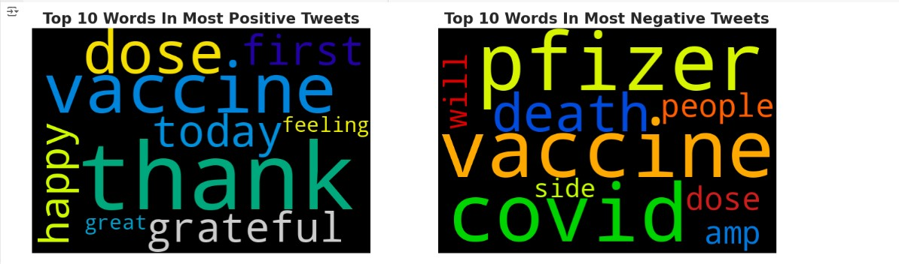
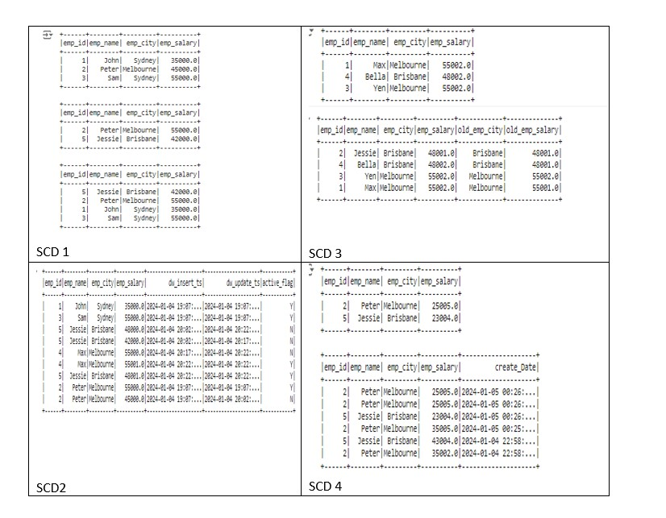

Project Overview: This project aims to analyze stock market trends using time series data of closing prices. By leveraging the Plotly library for interactive visualizations, we will explore historical price movements of selected stocks, identify patterns, and assess risk and return profiles.
This project explores public sentiment regarding COVID-19 using natural language processing (NLP) techniques. The analysis leverages the NLTK library for text processing, regular expressions for pattern matching, and visualization tools such as Matplotlib and WordCloud to present the findings effectively.
This project focuses on the implementation of Slowly Changing Dimensions (SCD) types 1, 2, 3, and 4 using PySpark and Delta Lake. SCDs are crucial in data warehousing as they help manage and maintain historical data in a structured manner. By leveraging Delta Lake's capabilities, this project aims to create an efficient and scalable solution for handling evolving data in a business environment.
